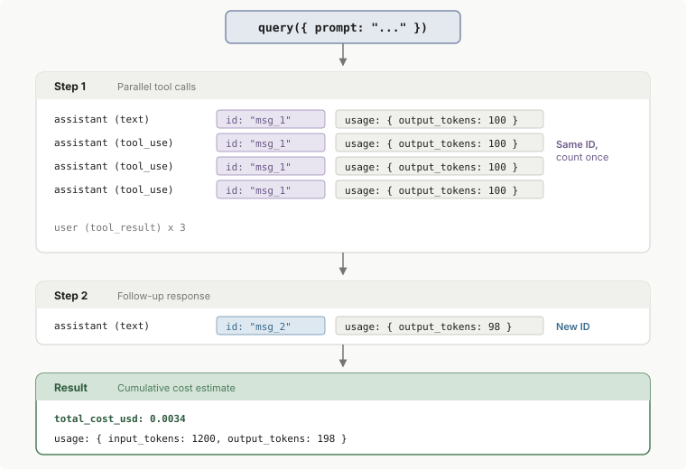

追踪成本和使用情况
了解如何追踪令牌使用情况、估算成本，以及使用 Claude Agent SDK 配置 prompt caching。
Claude Agent SDK 为每次与 Claude 的交互提供详细的令牌使用信息。本指南说明如何正确追踪使用情况和理解成本报告，特别是在处理并行工具使用和多步骤对话时。
有关完整的 API 文档，请参阅 TypeScript SDK 参考 和 Python SDK 参考。
total_cost_usd 和 costUSD 字段是客户端估计值，不是权威的计费数据。SDK 从在构建时捆绑的价格表中本地计算它们，除非 modelPricing 表生效。当以下情况发生时，它们可能与您实际被计费的金额不同：
- 定价发生变化
- 已安装的 SDK 版本无法识别某个模型
- 应用了客户端无法建模的计费规则
SDK 建模的一个计费规则是 数据驻留定价。当响应的 usage 报告 inference_geo: "us" 时，SDK 将该响应令牌的列表价格乘以 1.1。网络搜索等按请求收费的费用不会被乘以该系数。需要 TypeScript Agent SDK v0.3.239 或更高版本，或 Python Agent SDK v0.2.144 或更高版本。
使用这些字段进行开发洞察和大致预算编制。对于权威计费，请使用 使用情况和成本 API 或 Claude 控制台 中的使用情况页面。不要向最终用户计费或根据这些字段触发财务决策。
理解令牌使用情况
TypeScript 和 Python SDK 使用不同的字段名称公开相同的使用数据：
- TypeScript 在每个助手消息上提供按步骤的令牌分解（
message.message.id、message.message.usage），通过结果消息上的modelUsage提供按模型成本，以及结果消息上的累积总计。 - Python 在每个助手消息上提供按步骤的令牌分解，作为
message.usage和message.message_id，通过结果消息上的model_usage提供按模型成本，以及结果消息上的累积总计，作为total_cost_usd。
两个 SDK 使用相同的底层成本模型并公开相同的粒度。区别在于字段命名和按步骤使用的嵌套位置。
成本跟踪取决于理解 SDK 如何限定使用数据的范围：
query()调用： SDK 的query()函数的一次调用。单个调用可以涉及多个步骤：Claude 响应、使用工具、获取结果并再次响应。每个调用在末尾产生一个result消息，除了在 流式输入模式 中，其中一个query()调用承载多个用户轮次，每个轮次发出自己的result消息。- 步骤：
query()调用中的单个请求/响应周期。每个步骤产生具有令牌使用情况的助手消息。 - 会话： 由会话 ID 链接的一系列
query()调用（通过resume选项）。已恢复调用的结果报告会话的整体支出，而不仅仅是该调用自己的支出。有关总计如何结转的信息，请参阅 跨多个调用累积成本。
下图显示了单个 query() 调用的消息流，在每个步骤报告令牌使用情况，在末尾报告累积估计：

1. 每个步骤产生助手消息
当 Claude 响应时，它发送一个或多个助手消息。在 TypeScript 中，每个助手消息包含一个嵌套的 BetaMessage（通过 message.message 访问），具有 id 和一个 usage 对象，其中包含令牌计数（input_tokens、output_tokens）。在 Python 中，AssistantMessage 数据类通过 message.usage 和 message.message_id 直接公开相同的数据。当 Claude 在一个轮次中使用多个工具时，该轮次中的所有消息共享相同的 ID，因此按 ID 去重以避免重复计数。
2. 结果消息提供累积估计
当 query() 调用完成时，SDK 发出一个结果消息，其中包含 total_cost_usd 和累积 usage，在 TypeScript 中类型为 SDKResultMessage，在 Python 中类型为 ResultMessage。如果您只需要估计的总计，您可以忽略按步骤的使用情况并读取此单个值。
如果您进行多个独立的 query() 调用，每个结果仅反映该单个调用的成本。恢复会话的调用也计算会话的早期支出。
在流式输入模式中，每个轮次发出自己的结果消息。有关如何在该模式中读取调用总计的信息，请参阅 在流式输入模式中跟踪成本。
在流式输入模式下追踪成本
在流式输入模式中，一个 query() 调用包含多个用户轮次，每个轮次都会发出自己的结果消息。结果字段的范围不同：
usage：仅覆盖该轮次，在该轮次内仅覆盖主代理循环，不包括它运行的任何子代理。total_cost_usd和modelUsage，或 Python 中的model_usage：为整个调用到目前为止的运行总计，加上调用恢复会话时恢复的任何支出。
在应用从不发送 /clear、/reset 或 /new 的调用中，读取最新结果以获取调用总计，而不是对结果求和。
每次应用发送这三个命令之一时，运行总计都会重新开始，在 query() 调用内，没有其他东西会重置它们。三个结果对您的会计很重要：
/clear轮次的自身结果：仅覆盖自重置以来运行的内容，并携带新的session_id。- 之后的每个结果：继续从该重置开始计数。
- 每个
/clear之前的最后一个结果：保存自上一次重置以来的轮次总计。
要计算整个调用的总计，请将每个 /clear 之前的最后一个结果加上调用的最终结果。其他所有结果，包括 /clear 轮次的自身结果，都被后续结果取代。
在 TypeScript 中，SDK 还在每次重置时发出 SDKConversationResetMessage，因此您可以从流中检测重置。在 Python 中，SDK 同样发出 ConversationResetMessage。在 Python SDK v0.2.137 之前，Python 迭代器丢弃了该消息，因此在这些版本上，从应用发送的 /clear 轮次中自己计数重置。
maxBudgetUsd（TypeScript）或 max_budget_usd（Python）仅计算调用自身的支出：从恢复的会话恢复的总计不计入其中，/clear 启动预算重新开始。
获取查询的总成本
结果消息在 TypeScript 中被类型化为 SDKResultMessage，在 Python 中被类型化为 ResultMessage，标记了 query() 调用的代理循环的结束。它包含 total_cost_usd，即该调用中所有步骤的累积估计成本。恢复会话的调用也会计算会话的早期支出。读取该值时适用两个注意事项：
- 在 Python 中，该字段被类型化为可选的，因此在读取之前请检查它不是
None。 - 成功和错误结果都包含它，尽管 会话崩溃 的最终结果可能会将其设为零。
在流式输入模式下，按照 在流式输入模式下跟踪成本 中的描述读取调用总计。
当代理生成 子代理 时，三个结果级字段在计数内容上有所不同。使用 modelUsage，或在 Python 中使用 model_usage，进行整树令牌计数；usage 字段一旦发生嵌套就会低估。
| 字段 | 子代理活动 |
|---|---|
usage |
已排除。仅计算顶级代理循环，因此子代理内消耗的令牌不会被添加 |
total_cost_usd |
已包含。计算子代理请求以及顶级循环 |
modelUsage / model_usage |
已包含。计算子代理请求以及顶级循环，按模型分解 |
在 单消息输入模式 中，当后台子代理在最后一轮结束时仍在运行时，Claude Code 会等待它们，直到 退出时的后台任务 中描述的上限，然后再发出结果。结果的 total_cost_usd、duration_api_ms 和 modelUsage，或在 Python 中的 model_usage，包括在该等待期间完成的工作。
以下示例遍历来自 query() 调用的消息流，并在 result 消息到达时打印总成本：
import { query } from "@anthropic-ai/claude-agent-sdk";
try {
for await (const message of query({ prompt: "Summarize this project" })) {
if (message.type === "result") {
console.log(`Total cost: $${message.total_cost_usd}`);
}
}
} catch (error) {
// A single-shot query() throws after yielding an error result. If the
// failure was an error result, it still carried total_cost_usd and the
// branch above has already run; connection or process failures yield
// no result message.
console.error(`Session ended with an error: ${error}`);
}
from claude_agent_sdk import query, ResultMessage
import asyncio
async def main():
try:
async for message in query(prompt="Summarize this project"):
if isinstance(message, ResultMessage):
print(f"Total cost: ${message.total_cost_usd or 0}")
except Exception as error:
# A single-shot query() raises after yielding an error result. If the
# failure was an error result, the branch above has already run;
# connection or process failures yield no result message.
print(f"Session ended with an error: {error}")
asyncio.run(main())
要限制子代理可以添加到 total_cost_usd 的金额，请在查询上设置 深度、并发和支出限制。
跟踪每步和每个模型的使用情况
本节中的示例使用 TypeScript 字段名称。在 Python 中，等效字段为 AssistantMessage.usage 和 AssistantMessage.message_id 用于每步使用情况，以及 ResultMessage.model_usage 用于每个模型的细分。
跟踪每步使用情况
每条助手消息都包含一个嵌套的 BetaMessage（通过 message.message 访问），其中包含 id 和 usage 对象，该对象包含令牌计数。当 Claude 并行使用工具时，多条消息共享相同的 id 和相同的使用数据。跟踪您已经计数过的 ID，并跳过重复项以避免总数虚高。
去重后的每步值对于输入和缓存令牌是准确的。每步 output_tokens 是一个占位符，因此请 从结果消息中读取输出令牌。
以下示例累积所有步骤中的输入令牌，仅计数一次每个唯一的主循环消息 ID 并跳过子代理消息，并从结果消息中读取输出总数，该消息涵盖主循环：
import { query } from "@anthropic-ai/claude-agent-sdk";
const seenIds = new Set<string>();
let totalInputTokens = 0;
let resultOutputTokens = 0;
try {
for await (const message of query({ prompt: "Summarize this project" })) {
if (message.type === "assistant" && !message.parent_tool_use_id) {
const msgId = message.message.id;
// Parallel tool calls share the same ID, only count once
if (!seenIds.has(msgId)) {
seenIds.add(msgId);
totalInputTokens += message.message.usage.input_tokens;
}
}
if (message.type === "result") {
// Per-step output_tokens is a placeholder; the result message
// carries the accumulated output total.
resultOutputTokens = message.usage.output_tokens;
}
}
} catch (error) {
// A single-shot query() throws after yielding an error result, so the
// input total below still reflects the steps that ran before the failure.
console.error(`Session ended with an error: ${error}`);
}
console.log(`Steps: ${seenIds.size}`);
console.log(`Input tokens: ${totalInputTokens}`);
console.log(`Output tokens: ${resultOutputTokens}`);
按模型细分使用情况
结果消息包含 modelUsage，这是一个模型名称到每个模型令牌计数和成本的映射。当您运行多个模型（例如，为子代理使用 Haiku，为主代理使用 Opus）并想查看令牌的去向时，这很有用。
每个条目的 costBasis 说明哪个价格表为该模型的最新请求定价：list 表示列表价格，managed 表示 modelPricing 表，或 unknown 表示两者都不匹配模型 ID。该字段需要 Claude Code v2.1.246 或更高版本。
以下示例运行查询并打印每个使用的模型的成本和令牌细分：
import { query } from "@anthropic-ai/claude-agent-sdk";
try {
for await (const message of query({ prompt: "Summarize this project" })) {
if (message.type !== "result") continue;
for (const [modelName, usage] of Object.entries(message.modelUsage)) {
console.log(`${modelName}: $${usage.costUSD.toFixed(4)}`);
console.log(` Input tokens: ${usage.inputTokens}`);
console.log(` Output tokens: ${usage.outputTokens}`);
console.log(` Cache read: ${usage.cacheReadInputTokens}`);
console.log(` Cache creation: ${usage.cacheCreationInputTokens}`);
}
}
} catch (error) {
// A single-shot query() throws after yielding an error result. If the
// failure was an error result, the per-model breakdown above has already
// printed; connection or process failures yield no result message.
console.error(`Session ended with an error: ${error}`);
}
累积多个调用的成本
每个 query() 调用都会在其结果中返回 total_cost_usd。如何组合这些值取决于调用是否共享一个会话：
- 独立调用，没有
resume或continue选项：每个结果仅涵盖其自己的调用，因此您需要自己添加总计，如下面的示例所做的那样。 - 恢复同一会话的调用：Claude Code 在进程正常退出时将会话的总计保存到其记录，并在稍后的调用恢复或分叉会话时恢复它们。每个结果已经包括会话的早期支出。读取会话的最新结果以获得会话总计；对结果求和会重复计算恢复的支出。在 v2.1.277 之前，通过 SDK 或
claude -p恢复的会话将其总计从零开始，因此每个调用的结果仅涵盖该调用。
无论哪种情况，合并后的数值仍然是客户端估算值。
在流式输入模式下，按照在流式输入模式下跟踪成本中的说明读取每个调用的总计。对于以崩溃结束的调用，请参阅在会话崩溃后恢复总计。
以下示例按顺序运行两个 query() 调用，将每个调用的 total_cost_usd 添加到运行总计中，并打印每个调用和合并的成本：
import { query } from "@anthropic-ai/claude-agent-sdk";
// Track cumulative cost across multiple query() calls
let totalSpend = 0;
const prompts = [
"Read the files in src/ and summarize the architecture",
"List all exported functions in src/auth.ts"
];
for (const prompt of prompts) {
try {
for await (const message of query({ prompt })) {
if (message.type === "result") {
totalSpend += message.total_cost_usd;
console.log(`This call: $${message.total_cost_usd}`);
}
}
} catch (error) {
// A single-shot query() throws after yielding an error result. If the
// failure was an error result, this call's cost was already counted;
// connection or process failures yield no result message. Continue
// with the next prompt.
console.error(`Call failed: ${error}`);
}
}
console.log(`Total spend: $${totalSpend.toFixed(4)}`);
from claude_agent_sdk import query, ResultMessage
import asyncio
async def main():
# Track cumulative cost across multiple query() calls
total_spend = 0.0
prompts = [
"Read the files in src/ and summarize the architecture",
"List all exported functions in src/auth.ts",
]
for prompt in prompts:
try:
async for message in query(prompt=prompt):
if isinstance(message, ResultMessage):
cost = message.total_cost_usd or 0
total_spend += cost
print(f"This call: ${cost}")
except Exception as error:
# A single-shot query() raises after yielding an error result. If
# the failure was an error result, this call's cost was already
# counted; connection or process failures yield no result message.
# Continue with the next prompt.
print(f"Call failed: {error}")
print(f"Total spend: ${total_spend:.4f}")
asyncio.run(main())
处理错误、缓存和输出令牌计数
为了准确跟踪成本，需要考虑助手消息上的占位符输出计数、失败对话消耗的令牌以及缓存令牌定价。
从结果消息中读取输出令牌
Claude Code 从 API 在响应开始时报告的使用情况构建每条助手消息，因此消息的 output_tokens 仅是 API 在 message_start 时报告的计数，在生成响应之前。一个 API 响应可以产生多条助手消息，每条消息都携带相同的占位符。
API 在响应结束时报告真实输出计数，Claude Code 将其添加到结果消息中。从结果的 usage 中读取输出令牌，或从 modelUsage 中读取以获得按模型的细分。
要在流式传输响应时观察输出计数的增长，请设置 includePartialMessages，或在 Python 中设置 include_partial_messages，并从每个 message_delta 流事件中读取 usage，在 TypeScript 中类型为 SDKPartialAssistantMessage，在 Python 中为 StreamEvent。
跟踪失败对话的成本
成功和错误结果消息都包括 usage 和 total_cost_usd；在 Python 中两个字段都是可选类型，因此在读取之前检查它们不是 None。
如果对话中途失败，您仍然消耗了到失败点为止的令牌。从每条结果消息中读取成本数据，无论其 subtype 是 success 还是错误子类型之一。在某些错误结果上，usage 报告的值少于调用花费的值：
error_during_execution在 会话崩溃后：每个成本字段可能都被清零。error_max_budget_usd：usage省略了超出预算的响应，而total_cost_usd和modelUsage包括它。
如果有选择，从 total_cost_usd 或 modelUsage 而不是 usage 进行计算。
会话崩溃后恢复总计
当 Claude Code 进程崩溃时，它会发出最终的 error_during_execution 结果并退出，在单次和流式输入模式中都是如此。该结果可能携带清零的 usage、total_cost_usd 和 modelUsage，因此从崩溃前到达的内容恢复调用的总计。步骤 1 在存在较早结果时恢复完整总计；步骤 2 中的回退仅恢复主循环的输入和缓存令牌。
- 使用崩溃前的转换结果。在流式输入模式中，它保存 在流式输入模式下跟踪成本 中描述的运行总计。当该结果无法帮助您时，改为转到步骤 2：
* 调用是单次的，因此不存在较早的结果。
* 崩溃发生在第一个转换上。
* 崩溃前的转换是/clear本身，因此其结果仅涵盖重置。 - 改为对助手消息上的
usage求和，每个 API 响应计数一次，如 跟踪每步使用情况 示例所示。在单次模式中，对所有消息求和；在流式输入模式中，对最后一个结果之后到达的消息求和。这给您主循环的输入和缓存令牌。子代理使用情况无法通过这种方式恢复，输出令牌或美元成本也无法恢复，因为 每步output_tokens是占位符。
跟踪缓存令牌
Agent SDK 自动使用 prompt caching 来减少重复内容的成本。您无需自己配置缓存。使用对象包括两个额外的字段用于缓存跟踪：
cache_creation_input_tokens：用于创建新缓存条目的令牌（按比标准输入令牌更高的费率计费）。cache_read_input_tokens：从现有缓存条目读取的令牌（按降低的费率计费）。
将这些与 input_tokens 分开跟踪以了解缓存节省。在 TypeScript 中，这些字段在 Usage 对象上进行类型化。在 Python 中，它们作为 ResultMessage.usage 字典中的键出现（例如，message.usage.get("cache_read_input_tokens", 0)）。
将 prompt cache TTL 扩展到一小时
您自己的转换落在 主对话 TTL 存储桶 中，与 Claude Code 与它们内联运行的助手一起。Claude Code 在该对话之外进行的请求，例如 子代理，有 单独的 TTL 控制。
当您使用 API 密钥进行身份验证或在 Amazon Bedrock、Google Cloud 的 Agent Platform、Microsoft Foundry 或 AWS 上的 Claude Platform 上运行时，您自己的转换的缓存条目默认使用 5 分钟 TTL。如果您的工作负载针对相同的系统提示和上下文运行许多短会话，且会话之间的间隔超过 5 分钟，缓存会在会话之间过期，每个新会话都需要支付完整的输入价格。
要请求缓存写入的 1 小时 TTL，请设置 ENABLE_PROMPT_CACHING_1H 环境变量。您可以在 shell 或容器环境中导出它，或通过 options.env 传递它。
以下示例为在 Amazon Bedrock 上运行的代理启用 1 小时 TTL。因为它设置了 CLAUDE_CODE_USE_BEDROCK，它需要 Amazon Bedrock 的有效 AWS 凭证；没有它们查询会失败。
from claude_agent_sdk import ClaudeAgentOptions, query
import asyncio
async def main():
options = ClaudeAgentOptions(
env={
"CLAUDE_CODE_USE_BEDROCK": "1",
"ENABLE_PROMPT_CACHING_1H": "1",
},
)
async for message in query(prompt="Summarize this project", options=options):
print(message)
asyncio.run(main())
import { query } from "@anthropic-ai/claude-agent-sdk";
const options = {
env: {
...process.env,
CLAUDE_CODE_USE_BEDROCK: "1",
ENABLE_PROMPT_CACHING_1H: "1",
},
};
for await (const message of query({ prompt: "Summarize this project", options })) {
console.log(message);
}
具有 1 小时 TTL 的缓存写入按比 5 分钟写入更高的费率计费，因此启用此功能会用更高的写入成本换取更多缓存读取。有关详细信息，请参阅 prompt caching 定价。在您计划内包含的使用范围内的 Claude 订阅上，您可以在自己的转换上获得 1 小时 TTL，以及在 Claude Code 在其旁边进行的某些助手请求上，无需设置此变量，一旦您开始使用 使用额度，Claude Code 会将这些转换降低到 5 分钟 TTL。
ENABLE_PROMPT_CACHING_1H 要求在两个存储桶中的每个请求上使用 1 小时 TTL。要为每个存储桶分别选择 TTL，请改用这些控制。每个接受 5m 或 1h 并优先于 ENABLE_PROMPT_CACHING_1H：
- 主对话：
CLAUDE_CODE_PROMPT_CACHE_TTL环境变量，或promptCacheTtl设置 - 其他所有内容：
CLAUDE_CODE_SUBAGENT_PROMPT_CACHE_TTL环境变量，或subagentPromptCacheTtl设置
将 promptCacheTtl 设置为 1h 会在您使用使用额度时保持主对话上的 1 小时缓存。有关完整的优先级顺序，请参阅 自己选择 TTL。
相关文档
- TypeScript SDK 参考 - 完整的 API 文档
- SDK 概述 - SDK 入门
- SDK 权限 - 管理工具权限